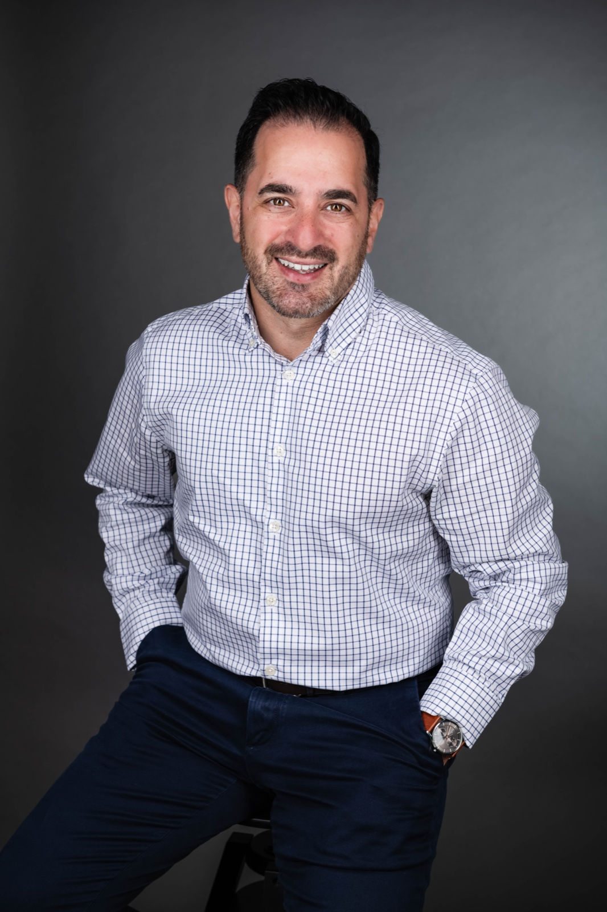

About the Founder
Philip Reilly
Senior Consultant, Global Philanthropic Canada · Founder, Giardino Agency
Scotland-born, and shaped by over 15yrs of international NGO work before founding Giardino Agency in Vancouver, BC.
Philip's understanding of the philanthropic world wasn't built in a boardroom — it was shaped by the people he met and the places he came to know. Across India, Nepal, Malawi, Zambia, Ethiopia, Tanzania, Uganda, Rwanda, Kenya, and the Philippines, he led fundraising strategy for international NGOs, always holding himself to the same standard: that every dollar raised had to be transformative in the communities and places that work touched.
That global outlook runs deeper than his career: his father's family is from Kolkata, India, and he has gone on to lead fundraising teams across North America, Europe, and East Africa — carrying with him everything he's learned from the communities he's had the privilege to work alongside.
Today, Philip is a Senior Consultant with Global Philanthropic Canada, a national fundraising consultancy that remains the primary base for his campaign and major-gifts work. Giardino Agency is the conduit for what that work makes possible on a more intimate scale — close, relational engagements like team retreats, transformational giving strategy, and the fundraising thought leadership he's building alongside it.
That experience is the foundation of Giardino Agency: a belief that fundraising done well isn't about extraction, it's about cultivation — building relationships with donors that are honest, patient, and built to last, and equipping the teams behind those relationships to sustain the work long-term.
How I Work
The principles behind the practice
Philip named the practice after the Italian word for garden because it describes how he actually works — patient, attentive, and unwilling to force an outcome that needs time to grow. Here's what that looks like in the room:
Clarity
Before offering a single recommendation, Philip listens — to your team, your donors, your data — so nothing he brings is a generic playbook dressed up as strategy.
Honoured Relationships
He treats every donor conversation, staff meeting, and board discussion as a relationship worth honouring, not a transaction to close — because that's where deeper generosity actually comes from.
Stewardship
Like any good gardener, Philip knows when to step back — building capacity in your team so the progress holds long after the engagement ends.
Speaking
Available for speaking engagements
Philip is a Senior Consultant with Global Philanthropic Canada and speaks on topics drawn directly from that work — reach out to bring one of these to your team, conference, or gathering:
He also writes Field Notes from a Fundraiser, a Substack on fundraising, generosity, and leadership.